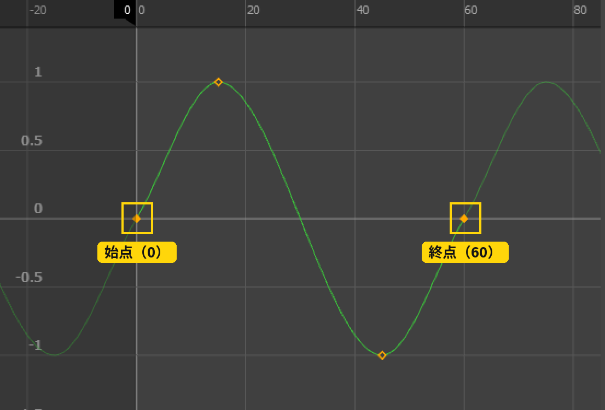
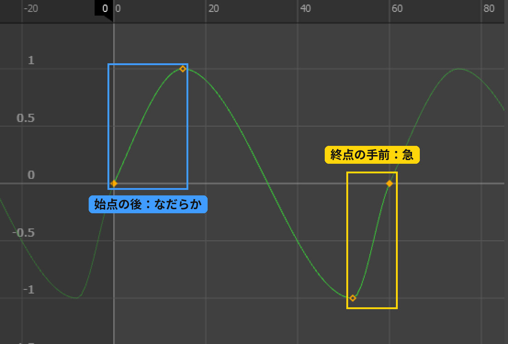
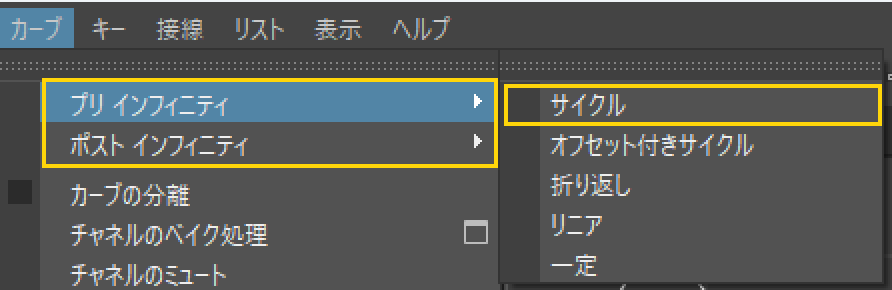
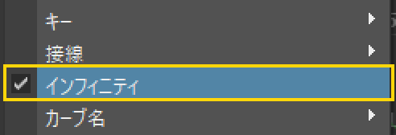
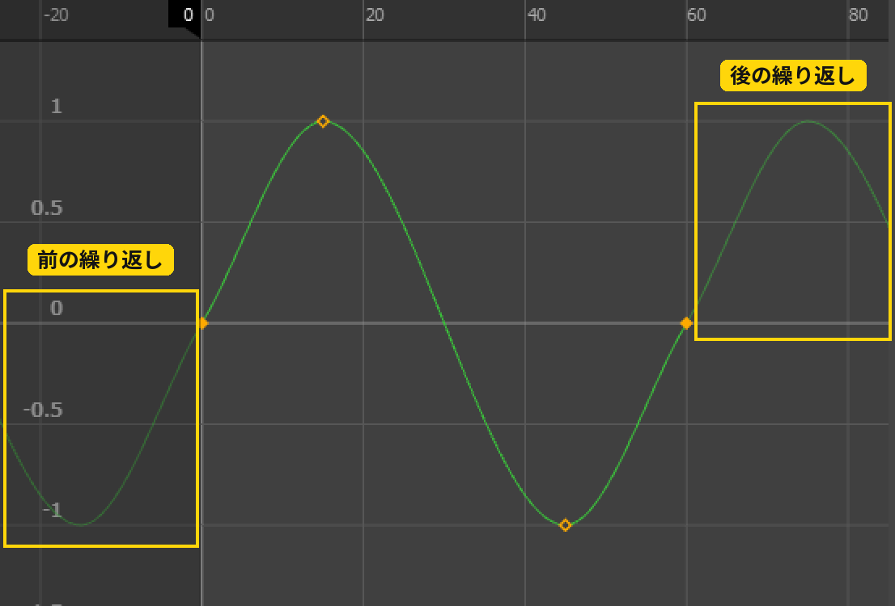
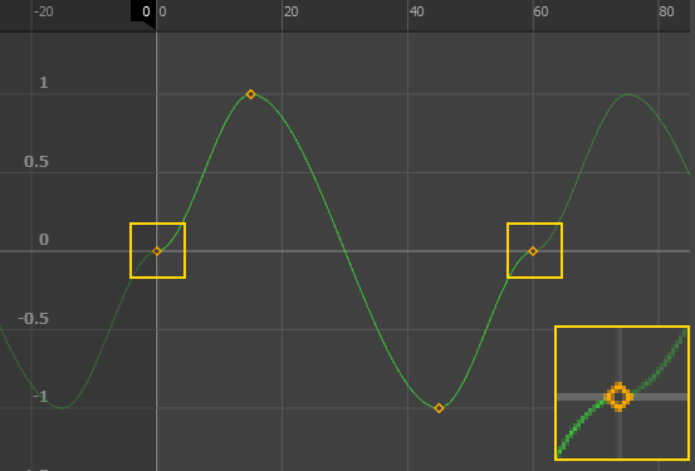
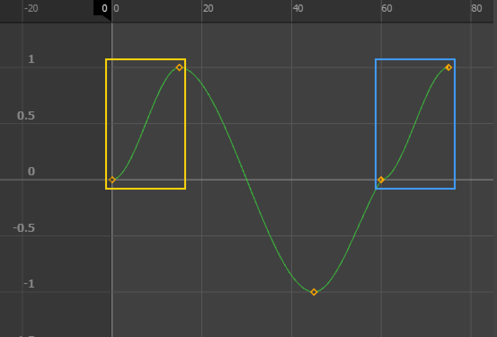
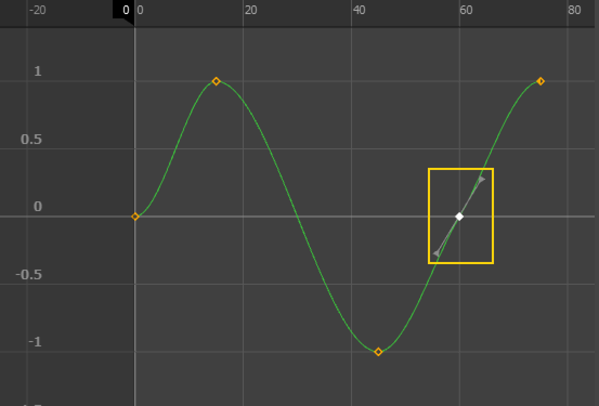
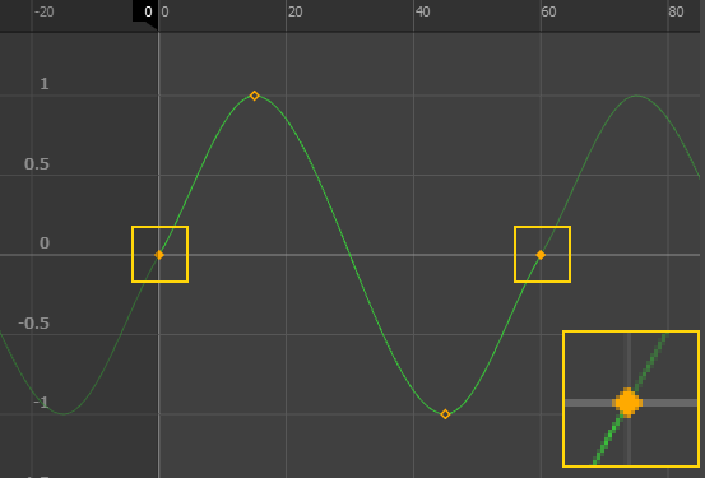

制作効率の向上
同じ動きを
繰り返し利用できるため、
制作コストを
大幅に削減できる。
+9の授業 ／ 座学 05
アニメーションの開始フレームと終了フレームが自然につながり、
繰り返し再生しても違和感のない動きのこと。

ゲーム、アニメ、映像制作において
非常に重要な技術であり、
以下のような場面で使用される。
なぜループモーションが重要？
制作効率の向上
同じ動きを
繰り返し利用できるため、
制作コストを
大幅に削減できる。
リアルタイム処理との相性
ゲームエンジンでは
ループアニメーションが
基本となるため、
自然なループは必須スキル。
違和感のない映像表現
ループのつなぎ目が
不自然だと、
ユーザーに
強い違和感を与える。
始点と終点を一致させる
これらが一致していないとループが破綻する。
動きのリズムを一定に保つ
リズムが不安定だとループ時に違和感が発生する。
例えば、終点は急に加速しているのに、
始点からはなだらかに動き出すような、
始点と終点のテンポがうまく繋がっていないカーブの流れ。
接線がループしていても、
動き自体に極端なブレが生じているのは不安定。

ループポイントを意識した設計
最初からループ前提で作ることが重要。
つなぎ目の確かめ方
グラフ エディタで、カーブの前後に繰り返しを表示すると、
つなぎ目の流れが見える
（最初の図の、前後の薄い線）。



再生して確かめる時は、
タイムスライダのリピート（繰り返し再生）も使う。座学 04タイムスライダ
始点と終点のキーの扱いでの注意
下の①のようなカーブの場合、
再生をすると滑らかにループされないことがあり、
滑らかに再生されるように編集する必要がある。
編集の一例を紹介する。



